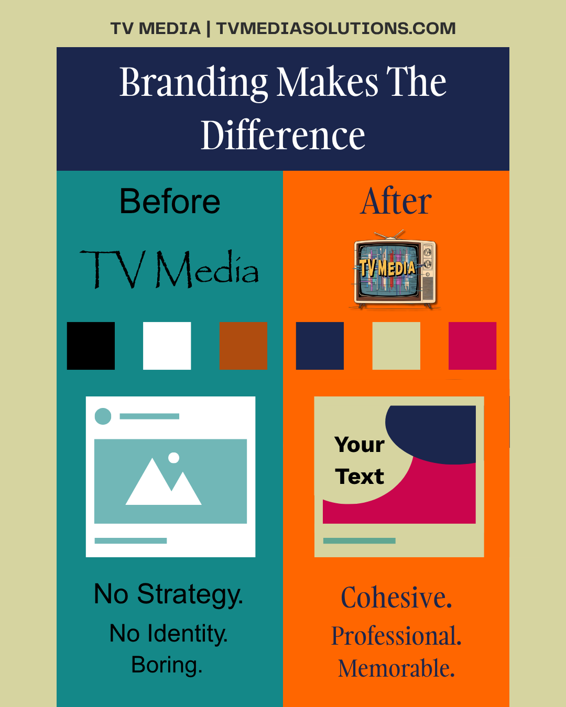
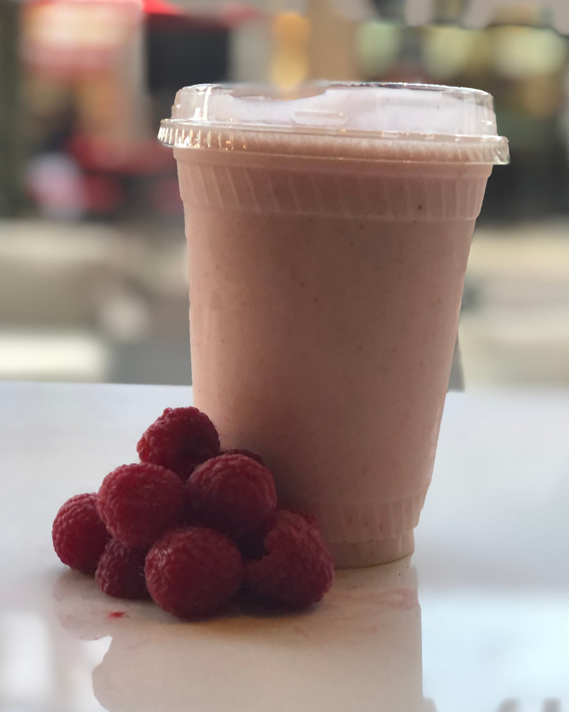
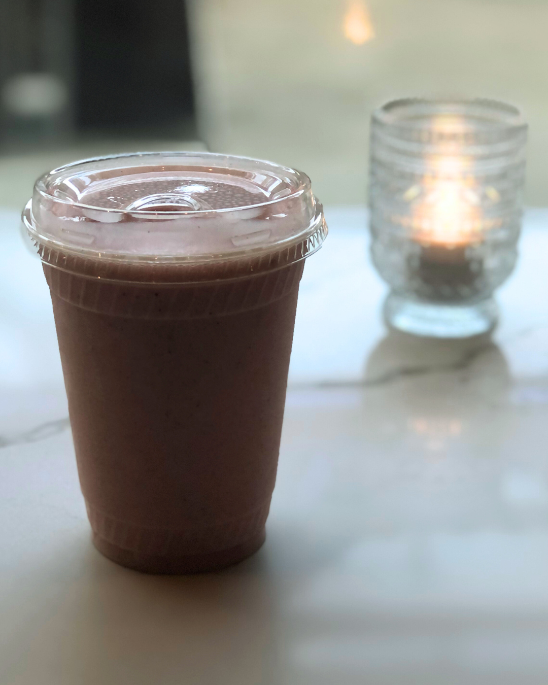

Follower Engagement
Sharing useful tips and seasonal advice positions your brand as a helpful local resource, encouraging followers to engage, save, and share your content.
See how our custom templates, flyers, and photography elevate your brand presence.
When templates are crafted specifically for your business, they reflect your unique style and voice—making your posts instantly recognizable. Custom templates help you maintain a cohesive look, engage your audience more effectively, and streamline content creation so you can focus on running your business.
Each template is fully layered and personalized with your logo, brand colors, and messaging. Whether you’re sharing seasonal tips, promotions, or team spotlights, these designs make it simple to publish professional, on-brand content consistently.
Sharing useful tips and seasonal advice positions your brand as a helpful local resource, encouraging followers to engage, save, and share your content.
Posting vibrant, timely content keeps your brand fresh and relevant—tapping into seasonal energy to make promotions and announcements more compelling.
Spotlighting your team humanizes your business, creating personal connections that build trust and loyalty with local customers.
Well-crafted flyers and promotional graphics provide a clear, focused way to share important announcements—whether promoting local events, community groups, or a brand refresh. Designed for both digital feeds and print-ready formats, they help you reach your audience wherever they are.

Clear, eye-catching event promotion drives local awareness and turnout. Well-designed flyers deliver key details at a glance so your community can easily join in.

Flyers for community programs and local organizations foster connection and participation, communicating vital schedule and contact details clearly.

Cohesive color palettes, typography, and layout systems transform scattered posts into a recognizable, trustworthy local brand presence.
Authentic photography sets independent businesses apart from stock-photo competitors. We capture your products, food, space, and team in their best light for websites, social feeds, and print campaigns.


